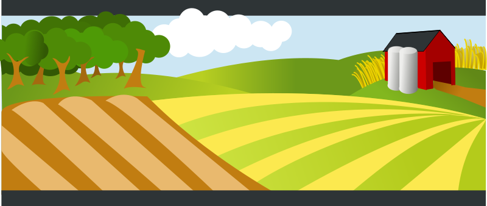

This is the title of the first slide. It should not be
too long, but this is your presentation...
This is the first point of the slide
Something less important
And even less
Second point of the slide. Maybe too long, but this
way I can test it
And, as expected, this is the third point. It is far longer than
the others,
so I can check how it looks like even when it is too long
Slide 2 - Title
Some important point that I make.
With some relevant stuff making it clearer
Other important point under the same title
Final thing I need to write in this slide
2 landscape images


2 portrait images

1 landscape, 1 portrait images
Tux Dummy

Slide 5 - Figure (caption bottom)
Tux dummy :-) I will try a very long caption to test the best options
for its layout. I really can't think of more unnecessary words
Slide 5b - Figure (caption top)
Tux dummy :-) I will try a very long caption to test the best options
for its layout. I really can't think of more unnecessary words
Slide 6 - Title
Short
Short too
Short
Short too
Short
Short too
Short
Short too
Slide 7 - Unsupported layout
Something
Other something